Abstract In this paper, we propose a simple but effective
image prior - dark channel prior to remove haze from a single input image. The dark channel prior is a kind of statistics of the haze-free outdoor images. It is based on a key
observation - most local patches in haze-free outdoor images contain some pixels which have very low intensities in
at least one color channel. Using this prior with the haze
imaging model, we can directly estimate the thickness of the
haze and recover a high quality haze-free image. Results on
a variety of outdoor haze images demonstrate the power of
the proposed prior. Moreover, a high quality depth map can
also be obtained as a by-product of haze removal.
要旨 本論文では、単一の入力画像からヘイズ（霞）を除去するための、単純かつ効果的な画像事前知識である「ダークチャネル事前知識（dark channel prior）」を提案する。ダークチャネル事前知識は、ヘイズのない屋外画像に関する統計的性質の一種である。これは、「ヘイズのない屋外画像の局所領域（パッチ）の大部分において、少なくとも一つの色チャネルで非常に低い輝度値を持つ画素が必ず存在する」という重要な観察に基づいている。この事前知識をヘイズの生成モデルと組み合わせることで、ヘイズの濃度を直接推定し、高品質なヘイズ除去画像を復元することが可能となる。様々な屋外ヘイズ画像を用いた実験結果は、提案する事前知識の有効性を実証している。さらに、ヘイズ除去の副産物として、高品質な深度マップを得ることもできる。
Images of outdoor scenes are usually degraded by the
turbid medium (e.g., particles, water-droplets) in the atmosphere. Haze, fog, and smoke are such phenomena due
to atmospheric absorption and scattering. The irradiance
received by the camera from the scene point is attenuated
along the line of sight. Furthermore, the incoming light is
blended with the airlight [6] (ambient light reflected into
the line of sight by atmospheric particles). The degraded
images lose the contrast and color fidelity, as shown in Figure 1(a). Since the amount of scattering depends on the distances of the scene points from the camera, the degradation
is spatial-variant.
屋外の風景画像は、通常、大気中の混濁媒体（粒子や水滴など）によって劣化します。ヘイズ（もや）、霧、煙は、大気による吸収や散乱に起因するこうした現象の例です。カメラが風景上の点から受け取る放射照度は、視線に沿って減衰します。さらに、入射光はエアライト[6]（大気中の粒子によって視線方向へ反射された環境光）と混ざり合います。図1(a)に示すように、劣化した画像ではコントラストや色の忠実度が失われます。散乱の量はカメラから風景上の点までの距離に依存するため、この劣化は空間的に不均一なものとなります。
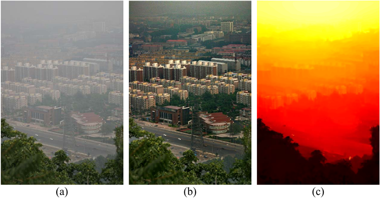
Figure 1. Haze removal using a single image. (a) input haze image.
(b) image after haze removal by our approach. (c) our recovered
depth map.
図1. 単一画像を用いたヘイズ除去。(a) 入力ヘイズ画像。
(b) 提案手法によるヘイズ除去後の画像。(c) 提案手法により復元された
深度マップ。
Haze removal1 (or dehazing) is highly desired in both
consumer/computational photography and computer vision
applications. First, removing haze can significantly increase
the visibility of the scene and correct the color shift caused
by the airlight. In general, the haze-free image is more visually pleasing. Second, most computer vision algorithms,
from low-level image analysis to high-level object recognition, usually assume that the input image (after radiometric
calibration) is the scene radiance. The performance of vision algorithms (e.g., feature detection, filtering, and photometric analysis) will inevitably suffer from the biased, low contrast scene radiance. Last, the haze removal can produce
depth information and benefit many vision algorithms and
advanced image editing. Haze or fog can be a useful depth
clue for scene understanding. The bad haze image can be
put to good use.
ヘイズ除去1（またはデヘイジング）は、コンシューマー向け写真撮影やコンピュテーショナル・フォトグラフィー、さらにはコンピュータビジョンの応用分野において、強く求められている技術です。第一に、ヘイズを除去することで、シーンの視認性が大幅に向上し、エアライト（大気光）に起因する色ずれを補正できます。一般的に、ヘイズのない画像の方が視覚的により好ましいものとなります。第二に、低次の画像解析から高次の物体認識に至るまで、ほとんどのコンピュータビジョン・アルゴリズムは、入力画像（放射量校正後）がシーンの放射輝度であることを前提としています。偏りがありコントラストの低いシーン放射輝度では、ビジョン・アルゴリズム（特徴検出、フィルタリング、測光解析など）の性能が必然的に低下してしまいます。最後に、ヘイズ除去によって深度情報を生成でき、これが多くのビジョン・アルゴリズムや高度な画像編集に役立ちます。ヘイズや霧は、シーン理解のための有用な深度の手がかりとなり得るのです。つまり、ヘイズのかかった画像も有効に活用できるということです。
1 Haze, fog, and smoke differ mainly in the material, size, shape, and
concentration of the atmospheric particles. See [9] for more details. In
this paper, we do not distinguish these similar phenomena and use the term
haze removal for simplicity.
ヘイズ（もや）、霧、および煙は、主に大気中の粒子の材質、大きさ、形状、および濃度において異なります。詳細については[9]を参照してください。本論文では、これら類似の現象を区別せず、簡潔にするために「ヘイズ除去（haze removal）」という用語を使用します。
However, haze removal is a challenging problem because
the haze is dependent on the unknown depth information.
The problem is under-constrained if the input is only a single haze image. Therefore, many methods have been proposed by using multiple images or additional information.
Polarization based methods [14, 15] remove the haze effect
through two or more images taken with different degrees of
polarization. In [8, 10, 12], more constraints are obtained
from multiple images of the same scene under different
weather conditions. Depth based methods [5, 11] require
the rough depth information either from the user inputs or
from known 3D models.
しかし、ヘイズ（霞）の除去は困難な課題です。なぜなら、ヘイズは未知の深度情報に依存しているからです。
入力が単一のヘイズ画像のみである場合、この問題は制約不足（under-constrained）の状態となります。そのため、複数の画像や追加情報を用いる手法が数多く提案されてきました。
偏光を利用する手法 [14, 15] では、異なる偏光度で撮影された2枚以上の画像を用いてヘイズの影響を除去します。また、[8, 10, 12] では、異なる気象条件下で同一のシーンを撮影した複数の画像から、より多くの制約情報を得ています。一方、深度に基づく手法 [5, 11] では、ユーザー入力や既知の3Dモデルから得られる、大まかな深度情報を必要とします。
Recently, single image haze removal[2, 16] has made
significant progresses. The success of these methods lies
in using a stronger prior or assumption. Tan [16] observes
that the haze-free image must have higher contrast compared with the input haze image and he removes the haze
by maximizing the local contrast of the restored image. The
results are visually compelling but may not be physically
valid. Fattal [2] estimates the albedo of the scene and then
infers the medium transmission, under the assumption that
the transmission and surface shading are locally uncorrelated. Fattal’s approach is physically sound and can produce
impressive results. However, this approach cannot well handle heavy haze images and may fail in the cases that the
assumption is broken.
近年、単一画像からのヘイズ除去[2, 16]は著しい進歩を遂げています。これらの手法の成功は、より強力な事前知識や仮定を用いている点にあります。Tan [16]は、ヘイズのない画像は入力されたヘイズ画像よりも高いコントラストを持つはずであると指摘し、復元画像の局所コントラストを最大化することでヘイズを除去しています。その結果は視覚的に説得力のあるものですが、物理的に妥当とは言えない場合があります。Fattal [2]は、透過率と表面の陰影（シェーディング）が局所的に無相関であるという仮定の下、シーンのアルベドを推定し、そこから媒質の透過率を導き出しています。Fattalのアプローチは物理的に妥当であり、印象的な結果を生み出すことができます。しかし、このアプローチは濃いヘイズを含む画像にはうまく対応できず、仮定が成立しない場合には失敗する可能性があります。
In this paper, we propose a novel prior - dark channel
prior, for single image haze removal. The dark channel
prior is based on the statistics of haze-free outdoor images.
We find that, in most of the local regions which do not cover
the sky, it is very often that some pixels (called ”dark pixels”) have very low intensity in at least one color (rgb) channel. In the haze image, the intensity of these dark pixels in
that channel is mainly contributed by the airlight. Therefore, these dark pixels can directly provide accurate estimation of the haze’s transmission. Combining a haze imaging model and a soft matting interpolation method, we can
recover a hi-quality haze-free image and produce a good
depth map (up to a scale).
本論文では、単一画像からのヘイズ（霞）除去を目的とした、新たな事前知識である「ダークチャネル・プライオア（dark channel prior）」を提案します。このダークチャネル・プライオアは、ヘイズのない屋外画像の統計的性質に基づいています。空を含まない局所領域の多くにおいて、特定の画素（「ダークピクセル」と呼びます）は、R、G、Bの少なくとも1つのチャネルで非常に低い輝度値を示すことが一般的です。ヘイズを含む画像において、当該チャネルにおけるこれらのダークピクセルの輝度は、主にエアライト（大気光）に起因します。したがって、これらのダークピクセルを利用することで、ヘイズの透過率を直接かつ正確に推定することが可能です。ヘイズの生成モデルとソフトマッティングによる補間手法を組み合わせることで、高品質なヘイズ除去画像と、（スケール不定ではあるものの）良好な深度マップを生成することができます。
Our approach is physically valid and are able to handle
distant objects even in the heavy haze image. We do not rely
on significant variance on transmission or surface shading in
the input image. The result contains few halo artifacts.
我々のアプローチは物理的に妥当であり、濃い霞（ヘイズ）がかかった画像であっても遠方の物体を扱うことが可能です。入力画像における透過率や表面の陰影の大きな変化に依存することはありません。その結果、ハロー（光輪状のアーティファクト）の発生もわずかです。
Like any approach using a strong assumption, our approach also has its own limitation. The dark channel prior
may be invalid when the scene object is inherently similar
to the airlight over a large local region and no shadow is cast
on the object. Although our approach works well for most
of haze outdoor images, it may fail on some extreme cases.
We believe that developing novel priors from different directions is very important and combining them together will
further advance the state of the art.
強力な仮定を用いる手法の常として、我々の手法にも独自の限界があります。広範囲にわたってシーン内の物体が本質的にエアライト（大気光）と類似しており、かつその物体に影が落ちていないような場合、「ダークチャネル・プライア（暗黒領域の事前知識）」は有効に機能しない可能性があります。我々の手法は屋外のヘイズ（霞）を含む画像の多くに対して良好に機能しますが、極端なケースでは失敗することもあり得ます。異なる視点から新たなプライアを開発すること、そしてそれらを組み合わせることは極めて重要であり、それによって技術水準（ステート・オブ・ジ・アート）がさらに向上すると我々は考えています。
In computer vision and computer graphics, the model
widely used to describe the formation of a haze image is
as follows [16, 2, 8, 9]:
コンピュータビジョンやコンピュータグラフィックスにおいて、ヘイズ画像の生成を記述するために広く用いられているモデルは、以下の通りである [16, 2, 8, 9]：
\[
\mathbf{I}(\mathbf{x})= \mathbf{J}(\mathbf{x})t(\mathbf{x})+ \mathbf{A}(1 − t(\mathbf{x})), \tag{1}
\]
where \(\mathbf{I}\) is the observed intensity, \(\mathbf{J}\) is the scene radiance, \(\mathbf{A}\) is the global atmospheric light, and \(t\) is the medium transmission describing the portion of the light that is not scattered and reaches the camera. The goal of haze removal is
to recover \(\mathbf{J}, \mathbf{A},\) and \(t\) from \(\mathbf{I}\).
ここで、\(\mathbf{I}\) は観測された強度、\(\mathbf{J}\) はシーンの放射輝度、\(\mathbf{A}\) は大気光、そして \(t\) は散乱されずにカメラに到達する光の割合を表す媒質の透過率である。ヘイズ除去の目的は、
\(\mathbf{I}\) から \(\mathbf{J}\)、\(\mathbf{A}\)、および \(t\) を復元することである。
The first term \(\mathbf{J}(\mathbf{x})t(\mathbf{x})\) on the right hand side of Equation (1) is called direct attenuation [16], and the second
term \(\mathbf{A}(1 − t(\mathbf{x}))\) is called airlight [6, 16]. Direct attenuation describes the scene radiance and its decay in the
medium, while airlight results from previously scattered
light and leads to the shift of the scene color. When the
atmosphere is homogenous, the transmission t can be expressed as:
式(1)の右辺の第1項 \(\mathbf{J}(\mathbf{x})t(\mathbf{x})\) は直接減衰（direct attenuation）[16]と呼ばれ、第2項 \(\mathbf{A}(1 − t(\mathbf{x}))\) はエアライト（airlight）[6, 16]と呼ばれます。直接減衰は、シーンの放射輝度とそれが媒質中で減衰する様子を表すのに対し、エアライトは、あらかじめ散乱された光に起因し、シーンの色の変化（シフト）をもたらします。大気が均質である場合、透過率 \(t\) は次のように表すことができます。
\[
t(\mathbf{x})= e^{−βd(\mathbf{x})}, \tag{2}
\]
where \(β\) is the scattering coefficient of the atmosphere. It
indicates that the scene radiance is attenuated exponentially
with the scene depth \(d\).
ここで、\(β\) は大気の散乱係数である。これは、シーンの放射輝度がシーンの奥行き \(d\) に伴って指数関数的に減衰することを示している。
Geometrically, the haze imaging Equation (1) means that
in RGB color space, vectors \(\mathbf{A}, \mathbf{I}(\mathbf{x}),\) and \(\mathbf{J}(\mathbf{x})\) are coplanar
and their end points are collinear (see Figure 2(a)). The
transmission \(t\) is the ratio of two line segments:
幾何学的に見ると、ヘイズ画像の式(1)は、
RGB色空間において、ベクトル \(\mathbf{A}\)、\(\mathbf{I}(\mathbf{x})\)、および \(\mathbf{J}(\mathbf{x})\) が同一平面上にあり、
かつそれらの終点が同一直線上にあることを意味します（図2(a)を参照）。
透過率 \(t\) は、2つの線分の比となります。
\[
t(\mathbf{x})=\frac{||\mathbf{A} − \mathbf{I}(\mathbf{x})||}{||
\mathbf{A} − \mathbf{J}(\mathbf{x})||} = \frac{A^c − I^c(\mathbf{x})}{A^c − J^c(\mathbf{x})}, \tag{3}
\]
where \(c ∈\{r, g, b\}\) is color channel index.
ここで、\(c ∈\{r, g, b\}\) はカラーチャネルのインデックスである。
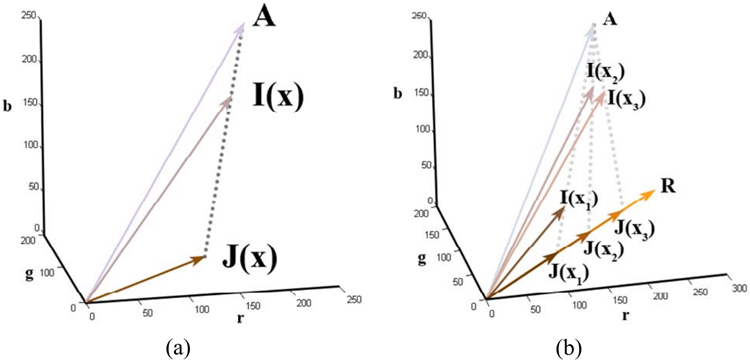
Figure 2. (a) Haze image formation model. (b) Constant albedo
model used in Fattal’s work [2].
図2. (a) ヘイズ画像の生成モデル。(b) Fattalの研究[2]で用いられた一定アルベドモデル。
Based on this model, Tan’s method [16] focuses on enhancing the visibility of the image. For a patch with uniform
transmission \(t\), the visibility (sum of gradient) of the input
image is reduced by the haze, since \(t \lt 1\):
このモデルに基づき、Tanの手法[16]は画像の視認性の向上に焦点を当てています。透過率 \(t\) が一様なパッチにおいて、\(t < 1\) であるため、入力画像の視認性（勾配の総和）はヘイズによって低下します。
\[
\sum\limits_\mathbf{x}||∇\mathbf{I}(\mathbf{x})|| = t\sum\limits_\mathbf{x}||∇\mathbf{J}(\mathbf{x})|| \lt \sum\limits_\mathbf{x}||
∇\mathbf{J}(\mathbf{x})||. \tag{4}
\]
The transmission \(t\) in a local patch is estimated by maximizing the visibility of the patch and satisfying a constraint
that the intensity of \(\mathbf{J}(\mathbf{x})\) is less than the intensity of \(\mathbf{A}\). An
MRF model is used to further regularize the result. This
approach is able to unveil details and structures from the
haze image. However, the output images tend to have larger
saturation values because this method solely focuses on the
enhancement of the visibility and does not intend to physically recover the scene radiance. Besides, the result may
contain halo effects near the depth discontinuities.
局所領域における透過率 \(t\) は、その領域の視認性を最大化し、かつ \(\mathbf{J}(\mathbf{x})\) の強度が \(\mathbf{A}\) の強度を下回るという制約を満たすように推定されます。結果をさらに正則化するために、MRF（マルコフ確率場）モデルが用いられます。この手法により、ヘイズ画像から詳細や構造を明らかにすることが可能です。しかし、この手法は視認性の向上のみに焦点を当てており、シーンの放射輝度を物理的に復元することを意図していないため、出力画像の彩度値は高くなる傾向があります。また、深度の不連続部付近では、ハロー効果が生じる可能性があります。
In [2], Fattal proposes an approach based on Independent Component Analysis (ICA). First, the albedo of a local patch is assumed as a constant vector \(\mathbf{R}\). Thus, all the
\(\mathbf{J}(\mathbf{x})\) in the patch have the same direction \(\mathbf{R}\), as shown in
Figure 2(b). Second, by assuming that the statistics of the
surface shading \(||\mathbf{J}(\mathbf{x})||\) and the transmission \(t(\mathbf{x})\) are independent in the patch, the direction of \(\mathbf{R}\) can be estimated
by ICA. Finally, an MRF model guided by the input color
image is applied to extrapolate the solution to the whole
image. This approach is physics-based and can produce a
natural haze-free image together with a good depth map.
However, because this approach is based on a statistically
independent assumption in a local patch, it requires the independent components varying significantly. Any lack of
variation or low signal-to-noise ratio (e.g., in dense haze region) will make the statistics unreliable. Moreover, as the
statistics is based on color information, it is invalid for grayscale images and difficult to handle dense haze which is often colorless and prone to noise.
Fattalは[2]において、独立成分分析（ICA）に基づく手法を提案している。まず、局所パッチ内のアルベドを定数ベクトル \(\mathbf{R}\) と仮定する。したがって、図2(b)に示すように、パッチ内のすべての \(\mathbf{J}(\mathbf{x})\) は同じ方向 \(\mathbf{R}\) を持つことになる。次に、パッチ内において、表面シェーディング \(||\mathbf{J}(\mathbf{x})||\) と透過率 \(t(\mathbf{x})\) の統計的性質が互いに独立であると仮定することで、ICAを用いて \(\mathbf{R}\) の方向を推定できる。最後に、入力カラー画像に基づくMRF（マルコフ確率場）モデルを適用し、その解を画像全体へと拡張する。この手法は物理モデルに基づいたものであり、自然なヘイズ（霞）のない画像と良好な深度マップを生成できる。しかし、局所パッチ内での統計的独立性の仮定に基づいているため、独立成分が大きく変動することが前提となる。変動が乏しい場合やS/N比が低い場合（例えば濃いヘイズ領域など）には、統計的性質の信頼性が低下してしまう。さらに、この統計的性質は色情報に基づいているため、グレースケール画像には適用できず、また、無彩色でノイズの影響を受けやすい濃いヘイズの処理も困難である。
In the next section, we will present a new prior - dark
channel prior, to estimate the transmission directly from a
hazy outdoor image.
次節では、霞のかかった屋外画像から透過率を直接推定するための新しい事前分布である「ダークチャネル事前分布」を提示します。
The dark channel prior is based on the following observation on haze-free outdoor images: in most of the non-sky
patches, at least one color channel has very low intensity at
some pixels. In other words, the minimum intensity in such
a patch should has a very low value. Formally, for an image
\(\mathbf{J}\), we define
「ダークチャネル・プライア（dark channel prior）」は、ヘイズ（霞）のない屋外画像に関する次の観察に基づいています。すなわち、空以外の領域の大部分において、少なくとも1つのカラーチャネルが、ある画素で非常に低い輝度値を示すということです。言い換えれば、そのような領域における最小輝度値は、非常に低い値になるはずです。数式として表現すると、画像 \(\mathbf{J}\) に対して、次のように定義されます。
\[
J^{dark}(\mathbf{x}) = \min\limits_{c∈\{r,g,b\}}\left(
\min\limits_{\mathbf{y}∈Ω(\mathbf{x})}\left(J^c(\mathbf{y})\right)\right), \tag{5}
\]
where \(J^c\) is a color channel of \(\mathbf{J}\) and \(Ω(\mathbf{x})\) is a local patch
centered at \(\mathbf{x}\). Our observation says that except for the
sky region, the intensity of \(J^{dark}\) is low and tends to be
zero, if \(\mathbf{J}\) is a haze-free outdoor image. We call \(J^{dark}\) the
dark channel of J, and we call the above statistical observation or knowledge the dark channel prior.
ここで、\(J^c\) は \(\mathbf{J}\) のカラーチャネルであり、\(\Omega(\mathbf{x})\) は \(\mathbf{x}\) を中心とする局所パッチである。我々の観察によれば、\(\mathbf{J}\) がヘイズ（霞）のない屋外画像である場合、空の領域を除いて、\(J^{dark}\) の強度は低く、ゼロに近い値をとる傾向がある。我々は \(J^{dark}\) を \(\mathbf{J}\) の「ダークチャネル」と呼び、上記の統計的な観察（あるいは知見）を「ダークチャネル・プライア（dark channel prior）」と呼ぶ。
The low intensities in the dark channel are mainly due to
three factors: a) shadows. e.g., the shadows of cars, buildings and the inside of windows in cityscape images, or the
shadows of leaves, trees and rocks in landscape images; b)
colorful objects or surfaces. e.g., any object (for example,
green grass/tree/plant, red or yellow flower/leaf, and blue
water surface) lacking color in any color channel will result in low values in the dark channel; \(c\)) dark objects or
surfaces. e.g., dark tree trunk and stone. As the natural outdoor images are usually full of shadows and colorful, the
dark channels of these images are really dark!
ダークチャネルにおける強度の低さは、主に以下の3つの要因によるものです。a) 影（例：都市景観画像における車、建物、窓の内部の影や、風景画像における葉、木、岩の影）、b) 色彩豊かな物体や表面（例：緑の草・木・植物、赤や黄色の花・葉、青い水面など、いずれかの色チャネルで値が低い物体は、ダークチャネルでも低い値となります）、c) 暗い物体や表面（例：暗い色の木の幹や石）。屋外の自然画像には通常、多くの影や色彩豊かな要素が含まれているため、それらの画像のダークチャネルは非常に暗いものとなります。
To verify how good the dark channel prior is, we collect an outdoor image sets from flickr.com and several other
image search engines using 150 most popular tags annotated by the flickr users. Since haze usually occurs in outdoor landscape and cityscape scenses, we manually pick out
the haze-free landscape and cityscape ones from the downloaded images. Among them, we randomly select 5,000 images and manually cut out the sky regions. They are resized
so that the maximum of width and height is 500 pixels and
their dark channels are computed using a patch size 15×15.
Figure 3 shows several outdoor images and the corresponding dark channels.
「ダークチャネル・プライア（dark channel prior）」の有効性を検証するため、Flickrユーザーによって付与された人気の高いタグ上位150個を用い、Flickrやその他の画像検索エンジンから屋外画像のセットを収集しました。霞（ヘイズ）は通常、屋外の自然風景や都市景観の場面で発生するため、ダウンロードした画像の中から、霞のない風景や都市景観の画像を人手によって選別しました。その中から5,000枚を無作為に抽出し、空の領域を人手で切り出しました。これらの画像は、幅と高さの最大値が500ピクセルとなるようにリサイズされ、15×15のパッチサイズを用いてダークチャネルが算出されました。図3に、いくつかの屋外画像とそれに対応するダークチャネルを示します。
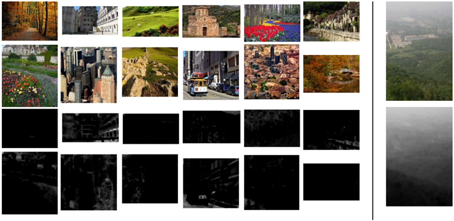
Figure 3. Top: example images in our haze-free image database.
Bottom: the corresponding dark channels. Right: a haze image
and its dark channel.
図3. 上段：ヘイズ（霞）のない画像データベースのサンプル画像。
下段：対応するダークチャネル。右側：ヘイズ画像とそのダークチャネル。
Figure 4(a) is the intensity histogram over all 5,000 dark
channels and Figure 4(b) is the corresponding cumulative
histogram. We can see that about 75% of the pixels in the
dark channels have zero values, and the intensities of 90%
of the pixels are below 25. This statistic gives a very strong
support to our dark channel prior. We also compute the
average intensity of each dark channel and plot the corresponding histogram in Figure 4(c). Again, most dark channels have very low average intensity, meaning only a small
portion of haze-free outdoor images deviate from our prior.
図4(a)は全5,000個のダークチャネルにおける輝度のヒストグラムであり、図4(b)はその累積ヒストグラムである。ダークチャネル内の画素の約75%は値がゼロであり、90%の画素の輝度は25未満であることがわかる。この統計結果は、我々のダークチャネル・プライア（事前知識）を強力に裏付けるものである。また、各ダークチャネルの平均輝度を算出し、そのヒストグラムを図4(c)に示した。ここでも、大部分のダークチャネルは非常に低い平均輝度を示しており、ヘイズ（霞）のない屋外画像において我々のプライアから逸脱するものはごく一部に過ぎないことがわかる。
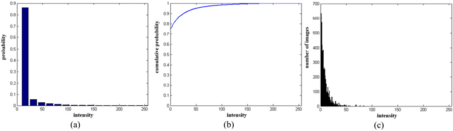
Figure 4. Statistics of the dark channels. (a) histogram of the intensity of the pixels in all of the 5,000 dark channels (each bin stands
for 16 intensity levels). (b) corresponding cumulative distribution.
(c) histogram of the average intensity of each dark channel.
図4. ダークチャネルの統計。(a) 5,000個のダークチャネルすべてにおける画素強度のヒストグラム（各ビンは16段階の強度レベルを表す）。(b) 対応する累積分布。(c) 各ダークチャネルの平均強度のヒストグラム。
Due to the additive airlight, a haze image is brighter than
its haze-free version in where the transmission t is low. So
the dark channel of the haze image will have higher intensity in regions with denser haze. Visually, the intensity of
the dark channel is a rough approximation of the thickness
of the haze (see the right hand side of Figure 3). In the next
section, we will use this property to estimate the transmission and the atmospheric light.
加算されるエアライト（airlight）の影響により、透過率 $t$ が低い領域では、ヘイズを含む画像はヘイズのない画像よりも明るくなります。そのため、ヘイズ画像のダークチャネルは、ヘイズが濃い領域ほど高い輝度値を持つことになります。視覚的には、ダークチャネルの輝度はヘイズの厚さの概略的な目安となります（図3の右側を参照）。次節では、この性質を利用して、透過率と大気光を推定します。
Note that, we neglect the sky regions because the dark
channel of a haze-free image may has high intensity here.
Fortunately, we can gracefully handle the sky regions by
using the haze imaging Equation (1) and our prior together.
It is not necessary to cut out the sky regions explicitly. We
discuss this issue in Section 4.1.
ヘイズのない画像のダークチャネルは空の領域で高い輝度値を持つ可能性があるため、ここでは空の領域を考慮から除外します。幸いなことに、ヘイズ画像の生成モデル式(1)と我々の事前知識を併用することで、空の領域を適切に扱うことが可能です。空の領域を明示的に切り出す必要はありません。この点については、セクション4.1で論じます。
Our dark channel prior is partially inspired by the well
known dark-object subtraction technique widely used in
multi-spectral remote sensing systems. In [1], spatially homogeneous haze is removed by subtracting a constant value
corresponding to the darkest object in the scene. Here, we
generalize this idea and proposed a novel prior for natural
image dehazing.
我々の「ダークチャネル・プライア（dark channel prior）」は、マルチスペクトル・リモートセンシング・システムで広く用いられている、よく知られた「ダークオブジェクト減算（dark-object subtraction）」手法に部分的に着想を得ています。[1]の手法では、シーン内で最も暗い物体に対応する定数値を減算することで、空間的に一様なヘイズ（霞）を除去します。本研究では、この考え方を一般化し、自然画像のヘイズ除去のための新たなプライアを提案しました。
Here, we first assume that the atmospheric light A is
given. We will present an automatic method to estimate
the atmospheric light in Section 4.4. We further assume
that the transmission in a local patch \(Ω(\mathbf{x})\) is constant. We
denote the patch’s transmission as \(\tilde{t}(\mathbf{x})\). Taking the min operation in the local patch on the haze imaging Equation (1),
we have:
ここではまず、大気光 A が与えられていると仮定します。大気光を推定する自動的な手法については、セクション 4.4 で提示します。さらに、局所パッチ \(\Omega(\mathbf{x})\) 内における透過率は一定であると仮定します。このパッチの透過率を \(\tilde{t}(\mathbf{x})\) と表記します。ヘイズ画像化に関する式 (1) に対して局所パッチ内で最小値演算（min演算）を適用すると、次のようになります。
\[
\min\limits_{\mathbf{y}∈Ω(\mathbf{x})}
\left(I^c(\mathbf{y})\right) = \tilde{t}(\mathbf{x}) \min\limits_{\mathbf{y}∈Ω(\mathbf{x})}\left(J^c(\mathbf{y})\right)+\left(1−\tilde{t}(\mathbf{x})\right)A^c. \tag{6}
\]
Notice that the min operation is performed on three color
channels independently. This equation is equivalent to:
min 演算は3つの色チャネルに対して独立して行われることに注意してください。この式は次と同等です。
\[
\min\limits_{\mathbf{y}∈Ω(\mathbf{x})}\Big(\frac{I^c(\mathbf{y})}{
A^c}\Big)= \tilde{t}(\mathbf{x}) \min\limits_{\mathbf{y}∈Ω(\mathbf{x})}\Big(\frac{J^c(\mathbf{y})}{A^c}\Big) + (1 − \tilde{t}(\mathbf{x})). \tag{7}
\]
Then, we take the min operation among three color channels on the above equation and obtain:
次に、上記の式に対して3つのカラーチャンネルの最小値演算を行い、次の式を得ます。
\[
\min\limits_c \Bigg( \min\limits_{\mathbf{y}∈Ω(\mathbf{x})}
\Big(\frac{I^c(\mathbf{y})}{A^c}\Big)\Bigg) = \tilde{t}(\mathbf{x}) \min\limits_c \Bigg( \min\limits_{\mathbf{y}∈Ω(\mathbf{x})}\Big(\frac{
J^c(\mathbf{y})}{A^c} \Big)\Bigg)+(1 − \tilde{t}(\mathbf{x})). \tag{8}
\]
According to the dark channel prior, the dark channel
\(J^{dark}\) of the haze-free radiance \(\mathbf{J}\) tend to be zero:
ダークチャネル・プライア（暗黒領域の事前知識）によれば、ヘイズのない放射輝度 \(\mathbf{J}\) のダークチャネル \(J^{dark}\) はゼロになる傾向があります：
\[
J^{dark}(\mathbf{x}) = \min\limits_c \big( \min\limits_{\mathbf{y}∈Ω(\mathbf{x})}
(J^c(\mathbf{y}))) = 0. \tag{9}
\]
As \(A^c\) is always positive, this leads to:
\(A^c\) は常に正であるため、これは次のように導かれます。
\[
\min\limits_c \Bigg( \min\limits_{\mathbf{y}∈Ω(\mathbf{x})}
\Big(\frac{J^c(\mathbf{y})}{A^c} \Big)\Bigg) = 0 \tag{10}
\]
Putting Equation (10) into Equation (8), we can estimate the
transmission \(\tilde{t}\)simply by:
式(10)を式(8)に代入すると、透過率 \(\tilde{t}\) は単に次のように推定できます。
\[
\tilde{t}(\mathbf{x})=1 − \min\limits_c \Bigg( \min\limits_
{\mathbf{y}∈Ω(\mathbf{x})}\Big(\frac{I^c(\mathbf{y})}{A^c} \Big)\Bigg). \tag{11}
\]
In fact, \(\min_c(\min_{\mathbf{y}∈Ω(\mathbf{x})}(\frac{I^c(\mathbf{y})}{A^c}))\) is the dark channel of the
normalized haze image \(\frac{I^c(\mathbf{y})}{A^c}\) . It directly provides the estimation of the transmission.
実際、\(\min_c(\min_{\mathbf{y}∈Ω(\mathbf{x})}(\frac{I^c(\mathbf{y})}{A^c}))\) は、正規化されたヘイズ画像 \(\frac{I^c(\mathbf{y})}{A^c}\) のダークチャネルであり、透過率の推定値を直接与えるものです。
As we mentioned before, the dark channel prior is not a
good prior for the sky regions. Fortunately, the color of the
sky is usually very similar to the atmospheric light \(\mathbf{A}\) in a
haze image and we have:
前述の通り、ダークチャネル・プライアは空の領域には適したプライアではありません。幸いなことに、ヘイズ画像における空の色は通常、大気光 $\mathbf{A}$ と非常によく似ており、以下の関係が成り立ちます。
\[
\min\limits_c \Bigg( \min\limits_{\mathbf{y}∈Ω(\mathbf{x})}
\Big(\frac{I^c(\mathbf{y})}{A^c} \Big)\Bigg) → 1,\quad and \quad \tilde{t}(\mathbf{x})→ 0,
\]
in the sky regions. Since the sky is at infinite and tends to
has zero transmission, the Equation (11) gracefully handles
both sky regions and non-sky regions. We do not need to
separate the sky regions beforehand.
空の領域において、空は無限遠に位置し透過率がゼロとなる傾向があるため、式(11)は空の領域とそれ以外の領域の双方を適切に扱うことができます。したがって、事前に空の領域を分離しておく必要はありません。
In practice, even in clear days the atmosphere is not absolutely free of any particle. So, the haze still exists when
we look at distant objects. Moreover, the presence of haze
is a fundamental cue for human to perceive depth [3, 13].
This phenomenon is called aerial perspective. If we remove the haze thoroughly, the image may seem unnatural
and the feeling of depth may be lost. So we can optionally
keep a very small amount of haze for the distant objects by
introducing a constant parameter ω (\(0 \lt ω \leq 1\)) into Equation
(11):
実際には、晴天時であっても大気中に粒子が全く存在しないわけではありません。そのため、遠くの物体を眺める際には依然として「もや（haze）」が存在します。さらに、このもやの存在は、人間が奥行きを知覚するための基本的な手がかりとなっています [3, 13]。この現象は「空気遠近法（aerial perspective）」と呼ばれます。もしもやを完全に取り除いてしまうと、画像が不自然に見えたり、奥行き感が失われたりする可能性があります。そこで、式(11)に定数パラメータ $\omega$ ($0 < \omega \leq 1$) を導入することで、遠くの物体に対してごくわずかなもやを残すように設定することができます。
\[
\tilde{t}(\mathbf{x})=1 − ω \min\limits_c \Bigg( \min\limits_{\mathbf{y}∈Ω(\mathbf{x})}\Big(
\frac{I^c(\mathbf{y})}{A^c} \Big)\Bigg). \tag{12}
\]
The nice property of this modification is that we adaptively
keep more haze for the distant objects. The value of \(ω\) is
application-based. We fix it to 0.95 for all results reported
in this paper.
この修正の利点は、遠くの物体に対しては適応的に「かすみ（haze）」をより多く残せることです。\(ω\)の値は用途に応じて決定されますが、本論文で報告するすべての結果においては、\(ω\)を0.95に固定しています。
Figure 5(b) is the estimated transmission map from an
input haze image (Figure 5(a)) using the patch size 15 ×
15. It is reasonably good but contains some block effects
since the transmission is not always constant in a patch. In
the next subsection, we refine this map using a soft matting
method.
図5(b)は、パッチサイズ15×15を用いて、入力ヘイズ画像（図5(a)）から推定された透過率マップである。このマップは概ね良好な結果を示しているが、パッチ内で透過率が常に一定であるとは限らないため、いくつかのブロック状のアーティファクト（ブロック効果）が見られる。次節では、ソフトマッティング法を用いてこのマップを精緻化する。
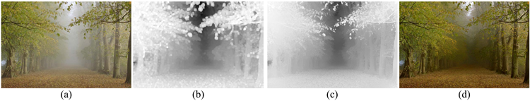
Figure 5. Haze removal result. (a) input haze image. (b) estimated transmission map. (c) refined transmission map after soft matting. (d)
final haze-free image.
図5. ヘイズ除去の結果。(a) 入力ヘイズ画像。(b) 推定透過率マップ。(c) ソフトマッティング後の精緻化された透過率マップ。(d) 最終的なヘイズ除去画像。
We notice that the haze imaging Equation (1) has a similar form with the image matting equation. A transmission
map is exactly an alpha map. Therefore, we apply a soft
matting algorithm [7] to refine the transmission.
ヘイズ画像の生成式（式(1)）は、画像マッティングの式と類似した形式をとっていることがわかります。透過率マップは、まさにアルファマップそのものです。そこで、透過率を精緻化するために、ソフトマッティング・アルゴリズム[7]を適用します。
Denote the refined transmission map by \(t(\mathbf{x})\). Rewriting
\(t(\mathbf{x})\) and \(\tilde{t}(\mathbf{x})\) in their vector form as \(\mathbf{t}\) and \(\tilde{\mathbf{t}}\), we minimize
the following cost function:
精緻化された透過率マップを \(t(\mathbf{x})\) と表します。\(t(\mathbf{x})\) および \(\tilde{t}(\mathbf{x})\) をベクトル形式でそれぞれ \(\mathbf{t}\) および \(\tilde{\mathbf{t}}\) と書き直すと、以下のコスト関数を最小化することになります。
E(\mathbf{t})= \mathbf{t}^\top \mathrm{L}\mathbf{t} + λ(\mathbf{t} −\tilde{\mathbf{t}})^\top(\mathbf{t} − \tilde{\mathbf{t}}). \tag{13}
\]
where L is the Matting Laplacian matrix proposed by Levin
[7], and \(λ\) is a regularization parameter. The first term is the
smooth term and the second term is the data term.
ここで、LはLevin [7]によって提案されたマッティング・ラプラシアン行列であり、\(λ\)は正則化パラメータである。第1項は平滑化項、第2項はデータ項である。
The (i,j) element of the matrix L is defined as:
行列 L の (i, j) 成分は次のように定義される：
\[
\sum_{k|(i,j)∈w_k}\Bigg(δ_{ij}− \frac{1}{|w_k|}\Bigg(1+(\boldsymbol{I}_i−μ_k)^\top \Big(Σ_k+\frac{\varepsilon}{|w_k|}\mathbf{U}_3\Big)^{−1}(\mathbf{I}_j−μ_k)\Bigg)\Bigg),
\tag{14}
\]
where \(\mathbf{I}_i\) and \(\mathbf{I}_j\) are the colors of the input image \(\mathbf{I}\) at pixels
i and j, \(δ_{ij}\) is the Kronecker delta, \(μ_k\) and \(Σ_k\) are the mean
and covariance matrix of the colors in window wk, \(U_3\) is a
3×3 identity matrix, ε is a regularizing parameter, and \(|w_k|\)
is the number of pixels in the window \(w_k\).
ここで、\(\mathbf{I}_i\) および \(\mathbf{I}_j\) は画素 \(i\) および \(j\) における入力画像 \(\mathbf{I}\) の色、\(δ_{ij}\) はクロネッカーのデルタ、\(μ_k\) および \(Σ_k\) はウィンドウ \(w_k\) 内の色の平均および共分散行列、\(U_3\) は3×3の単位行列、ε は正則化パラメータ、\(|w_k|\) はウィンドウ \(w_k\) 内の画素数である。
The optimal \(\mathbf{t}\) can be obtained by solving the following
sparse linear system:
最適な \(\mathbf{t}\) は、以下の疎な線形システムを解くことで求められます。
\[
(\mathrm{L} + λ\mathrm{U})\mathbf{t} = λ\tilde{\mathbf{t}} \tag{15}
\]
where U is an identity matrix of the same size as L. Here,
we set a small value on \(λ\) (\(10^{−4}\) in our experiments) so that
\(\mathbf{t}\) is softly constrained by \(\tilde{\mathbf{t}}\).
ここで、UはLと同じサイズの単位行列である。ここでは、
\(\mathbf{t}\)が\(\tilde{\mathbf{t}}\)によって緩やかに制約されるように、
\(\lambda\)に小さな値（我々の実験では\(10^{-4}\)）を設定する。
Levin’s soft matting method has also been applied by
Hsu et al.[4] to deal with the spatially variant white balance problem. In both Levin’s and Hsu’s works, the \(\tilde{\mathbf{t}}\) is
only known in sparse regions and the matting is mainly used
to extrapolate the value into the unknown region. In this paper, we use the soft matting to refine a coarser \(\tilde{\mathbf{t}}\) which has
already filled the whole image.
Levinのソフトマッティング手法は、空間的に変化するホワイトバランスの問題に対処するために、Hsuら[4]によっても適用されています。LevinとHsuのいずれの研究においても、\(\tilde{\mathbf{t}}\)は疎な領域でしか既知ではなく、マッティングは主にその値を未知の領域へと外挿するために用いられています。本論文では、画像全体を既に埋めている粗い\(\tilde{\mathbf{t}}\)を精緻化するために、ソフトマッティングを利用します。
Figure 5(c) is the soft matting result using Figure 5(b)
as the data term. As we can see, the refined transmission
map manages to capture the sharp edge discontinuities and
outline the profile of the objects.
図5(c)は、図5(b)をデータ項として用いたソフトマッティングの結果である。見ての通り、精緻化された透過率マップは、鋭いエッジの不連続性を捉え、物体の輪郭を適切に描き出している。
With the transmission map, we can recover the scene radiance according to Equation (1). But the direct attenuation
term \(\mathbf{J}(\mathbf{x})t(\mathbf{x})\) can be very close to zero when the transmission \(t(\mathbf{x})\) is close to zero. The directly recovered scene
radiance \(\mathbf{J}\) is prone to noise. Therefore, we restrict the transmission \(t(\mathbf{x})\) to a lower bound \(t_0\), which means that a small
amount of haze are preserved in very dense haze regions.
The final scene radiance \(\mathbf{J}(\mathbf{x})\) is recovered by:
透過率マップを用いれば、式(1)に従ってシーンの放射輝度を復元できます。しかし、透過率 \(t(\mathbf{x})\) がゼロに近い場合、直接減衰項 \(\mathbf{J}(\mathbf{x})t(\mathbf{x})\) もゼロに非常に近くなる可能性があります。そのため、直接復元されたシーンの放射輝度 \(\mathbf{J}\) はノイズの影響を受けやすくなります。そこで、透過率 \(t(\mathbf{x})\) に下限値 \(t_0\) を設けることで、非常に濃いヘイズ領域においても少量のヘイズが残るようにします。
最終的なシーンの放射輝度 \(\mathbf{J}(\mathbf{x})\) は、次のようにして復元されます。
\[
\mathbf{J}(\mathbf{x})= \frac{\mathbf{I}(\mathbf{x}) − \mathbf{A}}{\max(t(\mathbf{x}),t_0)} + \mathbf{A}. \tag{16}
\]
A typical value of \(t_0\) is 0.1.Since the scene radiance is usually not as bright as the atmospheric light, the image after
haze removal looks dim. So, we increase the exposure of
\(\mathbf{J}(\mathbf{x})\) for display. Figure 5(d) is our final recovered scene
radiance.
\(t_0\) の典型的な値は 0.1 です。シーンの放射輝度は通常、大気光ほど明るくないため、ヘイズ除去後の画像は暗く見えます。そこで、表示用に \(\mathbf{J}(\mathbf{x})\) の露出を上げます。図5(d)は、最終的に復元されたシーンの放射輝度です。
In most of the previous single image methods, the atmospheric light A is estimated from the most haze-opaque
pixel. For example, the pixel with highest intensity is used
as the atmospheric light in [16] and is furthered refined in
[2]. But in real images, the brightest pixel could be on a
white car or a white building.
これまでの単一画像を用いる手法の多くでは、大気光Aはヘイズ（霞）による不透明度が最も高い画素から推定されています。例えば、[16]では最も輝度の高い画素が大気光として用いられ、[2]ではその推定がさらに精緻化されています。しかし、実際の画像においては、最も明るい画素が白い車や白い建物上に位置している可能性があります。
As we discussed in Section 3, the dark channel of a
haze image approximates the haze denseness well (see Figure 6(b)). We can use the dark channel to improve the atmospheric light estimation. We first pick the top 0.1% brightest pixels in the dark channel. These pixels are most hazeopaque (bounded by yellow lines in Figure 6(b)). Among
these pixels, the pixels with highest intensity in the input
image \(\mathbf{I}\) is selected as the atmospheric light. These pixels are in the red rectangle in Figure 6(a). Note that these pixels may not be brightest in the whole image.
第3節で述べたように、ヘイズ画像のダークチャネルはヘイズの濃度を良好に近似します（図6(b)を参照）。このダークチャネルを利用することで、大気光の推定精度を向上させることができます。まず、ダークチャネルにおいて輝度値が高い上位0.1%の画素を抽出します。これらの画素はヘイズによる不透明度が最も高い領域に相当します（図6(b)では黄色の線で囲まれています）。これらの中から、入力画像 $\mathbf{I}$ において輝度が最も高い画素を大気光として選択します。該当する画素は図6(a)の赤枠内に位置しています。なお、これらの画素は画像全体の中で最も輝度が高い画素であるとは限らない点に注意してください。
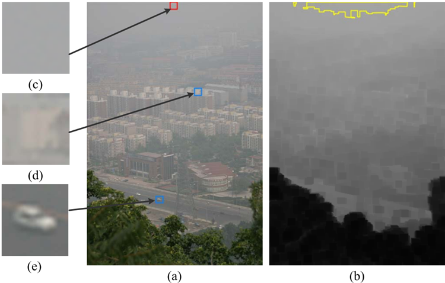
Figure 6. Estimating the atmospheric light. (a) input image. (b)
dark channel and the most haze-opaque region. (c) patch from
where our method automatically obtains the atmospheric light. (d)
and (e): two patches that contain pixels brighter than the atmospheric light.
図6. 大気光の推定。(a) 入力画像。(b) ダークチャネルおよびヘイズによる不透明度が最も高い領域。(c) 本手法が大気光を自動的に取得するパッチ。(d) および (e): 大気光よりも輝度の高い画素を含む2つのパッチ。
This simple method based on the dark channel prior is
more robust than the ”brightest pixel” method. We use it to
automatically estimate the atmospheric lights for all images
shown in the paper.
「ダークチャネル・プライア（dark channel prior）」に基づくこの単純な手法は、「最も明るい画素（brightest pixel）」を用いる手法よりも堅牢です。本論文で示されるすべての画像について、大気光を自動推定するためにこの手法を用います。
In our experiments, we perform the local min operator
using Marcel van Herk’s fast algorithm [17] whose complexity is linear to image size. The patch size is set to
15 × 15 for a 600 × 400 image. In the soft matting, we use
Preconditioned Conjugate Gradient (PCG) algorithm as our
solver. It takes about 10-20 seconds to process a 600×400
pixel image on a PC with a 3.0 GHz Intel Pentium 4 Processor.
本実験では、画像サイズに対して計算量が線形であるMarcel van Herkの高速アルゴリズム[17]を用いて、局所最小値（local min）演算を行います。パッチサイズは、600×400画素の画像に対して15×15に設定します。ソフトマッティングの処理には、ソルバーとして前処理付き共役勾配法（PCG）アルゴリズムを使用します。3.0 GHzのIntel Pentium 4プロセッサを搭載したPCにおいて、600×400画素の画像を処理するのに要する時間は約10～20秒です。
Figure 1 and Figure 7 show our haze removal results and
the recovered depth maps. The depth maps are computed
using Equation (2) and are up to an unknown scaling parameter β. The atmospheric lights in these images are automatically estimated using the method described in Section
4.4. As can be seen, our approach can unveil the details and
recover vivid color information even in very dense haze regions. The estimated depth maps are sharp and consistent
with the input images.
図1および図7に、我々の手法によるヘイズ除去の結果と復元された深度マップを示す。深度マップは式(2)を用いて算出されており、未知のスケールパラメータβを除いて求められるものである。これらの画像における大気光は、セクション4.4で述べた手法を用いて自動的に推定されている。図からわかるように、我々の手法は、非常に濃いヘイズ領域においても細部を明らかにし、鮮やかな色情報を復元することができる。推定された深度マップは鮮明であり、入力画像と整合性が取れている。
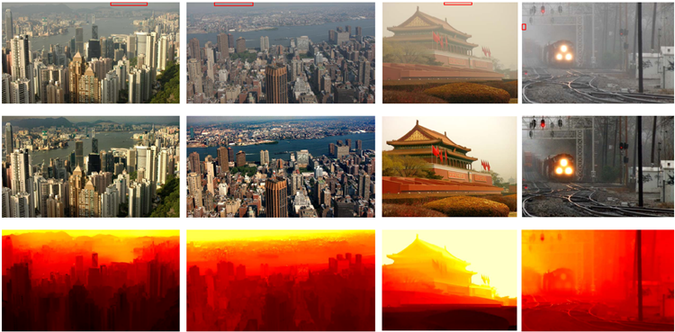
Figure 7. Haze removal results. Top: input haze images. Middle: restored haze-free images. Bottom: depth maps. The red rectangles in
the top row indicate where our method automatically obtains the atmospheric light.
図7. ヘイズ除去の結果。上段：入力ヘイズ画像。中段：復元されたヘイズフリー画像。下段：深度マップ。上段の赤枠は、提案手法が自動的に大気光を抽出する箇所を示しています。
In Figure 8, we compare our approach with Tan’s work
[16]. The colors of his result are often over saturated, since
his algorithm is not physically based and may underestimate
the transmission. Our method recovers the structures without sacrificing the fidelity of the colors (e.g., swan). The
halo artifacts are also significantly small in our result.
図8では、我々の手法とTanら[16]の手法を比較しています。Tanらの手法は物理ベースではなく、透過率を過小評価する可能性があるため、その結果の色はしばしば彩度が高くなりすぎてしまいます。一方、我々の手法では、色の忠実度を損なうことなく（例えば、白鳥の画像において）構造を復元できています。また、我々の結果では、ハロー・アーティファクトも大幅に低減されています。
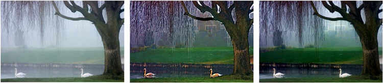
Figure 8. Comparison with Tan’s work [16]. Left: input image. Middle: Tan’s result. Right: our result.
図8. Tanの研究[16]との比較。左：入力画像。中央：Tanの結果。右：我々の結果。
Next, we compare our approach with Fattal’s work. In
Figure 9, our result is comparable to Fattal’s result 2. In
Figure 10, we show that our approach outperforms Fattal’s
in situations of dense haze. Fattal’s method is based on
statistics and requires sufficient color information and variance. If the haze is dense, the color is faint and the variance
is not high enough for his method to reliably estimate the
transmission. Figure 10 (b) and (c) show his results before and after the MRF extrapolation. Since only parts of
transmission can be reliably recovered, even after extrapolation, some of these regions are too dark (mountains) and
some hazes are not removed (distant part of the cityscape).
On the contrary, our approach works well for both regions (Figure 10(d)).
次に、我々のアプローチをFattalの手法と比較します。図9において、我々の結果はFattalの結果2と同等です。図10では、濃いヘイズ（霞）が存在する状況において、我々のアプローチがFattalの手法よりも優れていることを示しています。Fattalの手法は統計に基づいており、十分な色情報と分散を必要とします。ヘイズが濃い場合、色は薄くなり、分散も不十分となるため、同手法では透過率を確実に推定できません。図10(b)および(c)は、MRF（マルコフ確率場）による外挿処理の前後におけるFattalの結果を示しています。外挿を行っても透過率を確実に復元できるのは一部の領域に限られるため、結果には暗すぎる領域（山など）や、ヘイズが除去されずに残っている領域（都市景観の遠景など）が見られます。これに対し、我々のアプローチでは、いずれの領域においても良好な結果が得られています（図10(d)）。
2 from http://www.cs.huji.ac.il/raananf/projects/defog/index.html (page not found)
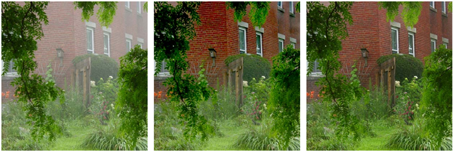
Figure 9. Comparison with Fattal’s work [2]. Left: input image.
Middle: Fattal’s result. Right: our result.
図9. Fattalらの手法[2]との比較。左：入力画像。
中央：Fattalらの結果。右：本手法の結果。
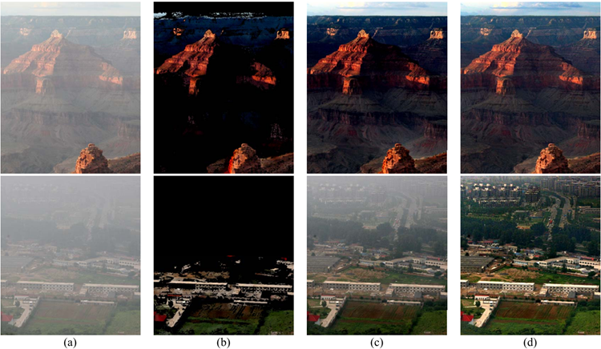
Figure 10. More comparisons with Fattal’s work [2]. (a) input images. (b) results before extrapolation, using Fattal’s method. The
transmission is not estimated in the black regions. (c) Fattal’s results after extrapolation. (d) our results.
図10. Fattalらの手法[2]とのさらなる比較。(a) 入力画像。(b) Fattalらの手法による、外挿（extrapolation）前の結果。黒い領域では透過率が推定されていない。(c) 外挿後のFattalらの結果。(d) 本手法の結果。
We also compare our method with Kopf et al.’s very recent work [5] in Figure 11. To remove the haze, they utilize the 3D models and texture maps of the scene. This
additional information may come from Google Earth and
satellite images. However, our technique can generate comparable results from a single image without any geometric
information.
また、図11では、我々の手法をKopfらによるごく最近の研究[5]と比較しています。彼らはヘイズ（霞）を除去するために、シーンの3Dモデルやテクスチャマップを利用しています。こうした追加情報は、Google Earthや衛星画像から得られるものです。一方、我々の手法であれば、幾何学的な情報を一切必要とせず、単一の画像から同等の結果を生成することが可能です。
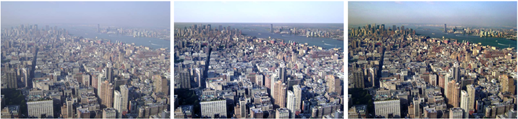
Figure 11. Comparison with Kopf et al.’s work [5]. Left: input image. Middle: Kopf’s result. Right: our result.
図11. Kopfら[5]の研究との比較。左：入力画像。中央：Kopfらの結果。右：我々の結果。
Our approach even works for the gray-scale images if
there are enough shadow regions in the image. We omit
the operator minc and use the gray-scale form of soft matting [7]. Figure 12 shows an example.
画像内に十分な影の領域が存在する場合、我々の手法はグレースケール画像に対しても適用可能です。その際、演算子 minc は省略し、ソフトマッティング [7] のグレースケール版を用います。図12にその例を示します。
[More results and comparisons can be found at
http://mmlab.ie.cuhk.edu.hk]
[より詳しい結果や比較については、以下のウェブサイトをご覧ください。
http://mmlab.ie.cuhk.edu.hk]
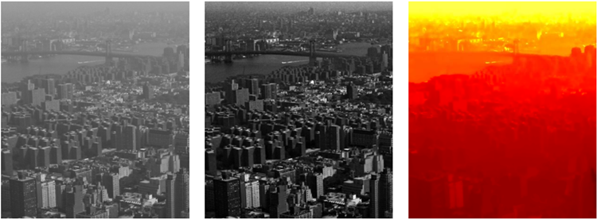
Figure 12. Gray-scale image example.
図12. グレースケール画像の例
In this paper, we have proposed a very simple but powerful prior, called dark channel prior, for single image haze
removal. The dark channel prior is based on the statistics of
the outdoor images. Applying the prior into the haze imaging model, single image haze removal becomes simpler and
more effective.
本論文では、単一画像からのヘイズ除去を目的として、「ダークチャネル・プライア（dark channel prior）」と呼ばれる、非常に単純ながらも強力な事前知識を提案しました。このダークチャネル・プライアは、屋外画像の統計的性質に基づいています。この事前知識をヘイズ画像の生成モデルに適用することで、単一画像からのヘイズ除去がより簡便かつ効果的なものとなります。
Since the dark channel prior is a kind of statistic, it may
not work for some particular images. When the scene objects are inherently similar to the atmospheric light and no shadow is cast on them, the dark channel prior is invalid.
Our method will underestimate the transmission for these
objects, such as the white marble in Figure 13.
ダークチャネル・プライア（dark channel prior）はある種の統計的性質に基づいているため、特定の画像に対しては有効に機能しない場合があります。被写体が本来的に大気光と類似した色や明るさを持ち、かつ影が落ちていないような場合、ダークチャネル・プライアは適用できません。そのため、図13の白い大理石のような物体に対しては、本手法は透過率を過小評価することになります。
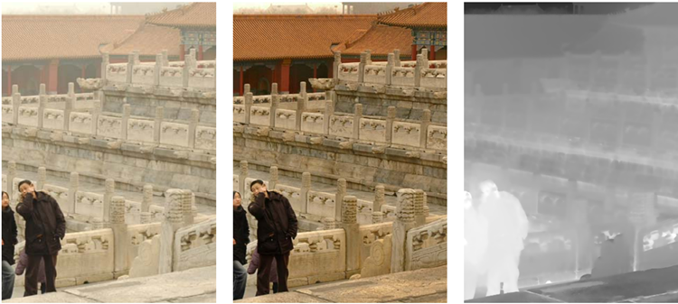
Figure 13. Failure case. Left: input image. Middle: our result.
Right: our transmission map. The transmission of the marble is
underestimated.
図13. 失敗例。左：入力画像。中央：本手法の出力結果。
右：本手法の透過率マップ。大理石の透過率が過小評価されている。
Our work also shares the common limitation of most
haze removal methods - the haze imaging model may be invalid. More advanced models [13] can be used to describe
complicated phenomena, such as the sun’s influence on the
sky region, and the blueish hue near the horizon. We intend
to investigate haze removal based on these models in the
future.
我々の手法もまた、多くのヘイズ除去法に共通する限界を抱えています。それは、ヘイズの画像化モデルが妥当ではない可能性があるという点です。空の領域に対する太陽の影響や、地平線付近に見られる青みがかった色調といった複雑な現象を記述するには、より高度なモデル [13] を用いることが可能です。今後は、こうしたモデルに基づくヘイズ除去について検討していく予定です。